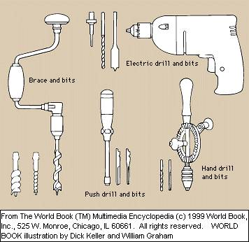
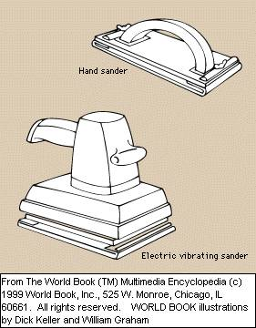

Woodworking is the forming and shaping of wood to make useful and decorative objects. It is one of the oldest crafts and ranks as a popular hobby and an important industry. A skilled woodworker with a well-equipped home workshop can build items as simple as a birdhouse or as complicated as decorative furniture. Tools for a workshop can be purchased at hardware and department stores. Lumber retail stores and hobby shops sell a wide variety of wood.
The construction industry employs carpenters who construct the wooden framework of buildings. Other kinds of woodworkers include finish carpenters and cabinetmakers. Finish carpenters do the inside trim work around windows, cabinets, and other features that must fit exactly. Cabinetmakers design, shape, and assemble furniture, built-in cabinets, and stairways.

The history of woodworking goes back to about 8,000 B.C., when people first used an ax as a woodworking tool. In the Middle Ages, woodworkers and other craftworkers formed organizations called guilds. The guilds were similar in some ways to today's labor unions. In 1873, electric power was used to drive machine tools for the first time. Through the years came the development of the power tools now used for woodworking. The first practical hand drill was patented in 1917. By 1925, woodworkers could buy electric portable saws for their home workshop. Today, power tools can be used in most woodworking operations, but many people enjoy shaping wood with hand tools instead.
Woodworking projects, together with plans for their construction, can be found in books, magazines, and manuals in
bookstores and public libraries. There are five main steps in woodworking: (1) planning and design, (2) cutting, (3)
drilling, (4) fastening, and (5) sanding and finishing.
Planning and design. Careful planning can prevent mistakes and save time and materials. A scale drawing of the
object being built should be made before starting any woodworking project. This drawing includes the exact
measurements of the object. The craftworker marks the measurements on the wood with a pencil and lists all the steps
to be followed in the project

A woodworking tape and rule are used to measure dimensions. A square can also be used for measuring and for making
straight lines and angles. Various gauges make marks and parallel lines for the woodworker to follow when cutting
joints and attaching hinges.
The parts of the finished object will fit together properly if the drawing has been prepared correctly and if
measuring and construction have been done accurately. A well-designed object is both attractive and the right size
for its purpose. For example, a birdhouse must have an entrance that is large enough for the birds that will use it.
Cutting wood to the right size and shape can be done with a variety of hand and power tools, including saws,
chisels, and planes. The largest and most familiar handsaws are the crosscut saw and the ripsaw. Crosscut saws cut
across the grain of the wood, and ripsaws cut with the grain.
Power tools can do a job far more quickly, easily, and accurately than hand tools. For example, a circular saw
has a
toothed disk that spins at great speed. Different blades can be attached for a variety of cutting operations, such
as crosscutting and ripping.
A common hand tool for cutting joints is the backsaw, which has a thin rectangular blade for fine work. The
blade
has a metal bar along its back to make it stiff. Chisels, which can cut deeply into the surface of wood, can be used
for making joints or for trimming and carving. A portable electric router has attachments called bits that can be
used to trim or shape wood and to make joints and decorative cuts. A hand tool called a coping saw consists of a
metal frame that holds a narrow blade used for cutting curves in wood. Jigsaws and saber saws, power tools that cut
curves, have a thin blade that moves up and down at great speed.
Mechanical planes, called jointers, and hand planes have sharp blades that smooth and shape wood. A wood-turning
lathe shapes wood into rounded forms by rapidly spinning it against a cutting edge held by the operator. A file
shapes wood in places where a sharper cutting tool does not fit. Files can also sharpen tools.
Drilling enables a woodworker to connect sections of wood with screws, metal plates, and hinges. Drilling may
also
be required when constructing some joints. Braces and hand drills have bits to make holes of different sizes for
various purposes. Portable electric drills and drill presses also use bits to drill holes. They have attachments for
sanding and other purposes.
Fastening. Sections of wood are fastened together with metal fasteners, such as screws and nails, and with
adhesives. Tools for fastening include screwdrivers and hammers. Screwdrivers insert screws that connect sections of
wood and hold hinges and metal plates. Hammers are used to drive in nails and a variety of other types of metal
fasteners.
Gluing is one of the oldest methods of fastening sections of wood, and a variety of adhesives are used in
woodworking. Polyvinyl resin emulsion glue, or white glue, can be applied directly from the bottle. It should not be
used if it will come in contact with water or high temperatures. Urea-formaldehyde resin glue and resorcinol
formaldehyde resin glue both must be mixed by the user. Urea glue can resist cold water for short periods, but it
cannot withstand high temperatures. Resorcinol glue is waterproof and heat resistant. After gluing, wood should be
put into clamps for as long as 12 hours. The length of time depends on the temperature, kind of wood, and type of
glue. Clamping holds the wood in place and spreads the glue into the pores.
Sanding and finishing. Sanding removes tool marks and makes wood surfaces smooth for finishing. Sanding should
not
begin until the wood has been cut to its final size. Most abrasive paper manufactured for use by hand has rough
particles of the minerals flint or garnet. Aluminum oxide is a common sanding material used in such machines as a
portable belt sander or a vibrating sander. Portable belt sanders work better than vibrating sanders on large wood
surfaces.
Woodworkers use a variety of finishes to protect wood and to bring out the beauty of the grain. A stain is a dye
that colors wood without hiding the pattern and feel of the grain. Paint covers the grain of the wood and provides a
color of its own. Varnish, shellac, and lacquer add a hard, glossy finish while exposing the beauty of the wood. Wax
protects varnish and has a smooth, shiny finish when polished. Enamel is a type of glossy paint.
Tools are made to be safe when used correctly. They can be preserved--and accidents can be prevented--by using the
right tools for the job and keeping them clean and sharp. A woodworker must use extra pressure with a dull tool, and
injury could result if the tool slips. Many tools can be sharpened on the rough surface of an oilstone. A broken or
damaged tool does not work properly and should not be used.
Whenever possible, wood should be held in a vise or by clamps, so that both hands are free to handle the tool
being
used. Floors should be kept clean of such substances as sawdust and finishing materials, which are slippery and also
could catch fire. Safety glasses should always be worn during cutting and boring operations in order to protect the
eyes from flying particles of wood. Loose clothing and jewelry that could get caught in a machine should not be worn
in a woodworking area.
A craftworker can prevent accidents by holding a portable power tool until all the moving parts have stopped. A
machine should never be left running unattended. In addition, a machine should be disconnected when not in use. The
hazard of receiving an electric shock can be reduced by connecting ground wires to machines that have not been
previously grounded.
Woodworkers classify wood as hardwood or softwood, depending on the type of tree from which it comes. Most hardwood
trees are deciduous--that is, they lose their leaves every autumn. Most softwood, or coniferous, trees have narrow,
pointed leaves and stay green the year around. This classification system does not indicate the hardness of wood,
because various softwoods are harder than some hardwoods. However, the two types of wood have other characteristics
that are important to the woodworker.
Hardwoods have beautiful grain patterns and can be used to make fine furniture. Some hardwoods have large pores
and
must be treated with a paste or liquid called filler before being covered with a finish. Wood to be finished with
paint does not need a fancy grain to be attractive because the paint covers the pattern. Hardwoods used in
woodworking include birch, mahogany, maple, oak, and walnut.
Most softwoods can easily be sawed, planed, chiseled, or bored. They are used mainly for structural work, but
such
softwoods as Douglas-fir, ponderosa pine, redcedar, and white pine can be used for woodworking and furniture.
Hardwood or softwood can also be used to make a type of manufactured board called plywood. Plywood consists of
an
odd number of thin layers of wood glued together. It is lightweight and strong and can be purchased in many sizes
and wood patterns.